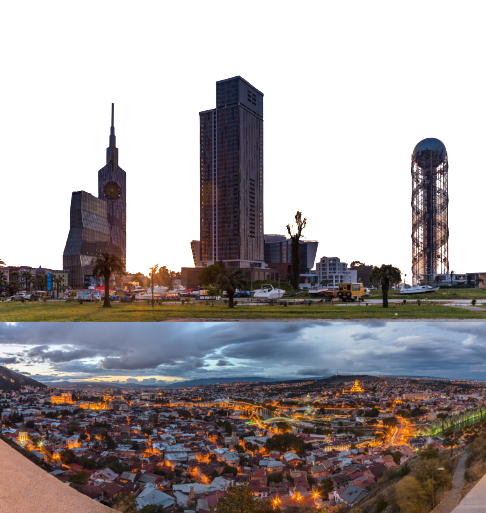

North America
- USA
The United States of America (U.S.A. or USA),
commonly known as the United
States (U.S. or US) or America,
is a country primarily located in North America.
It consists of 50 states,
a federal district, five major unincorporated territories,
nine Minor Outlying Islands, and 326 Indian reservations
South America
- Argentina
Argentina Spanish pronunciation: [aɾxenˈtina] ,
officially the Argentine Republic (Spanish: República Argentina),
is a country in the southern half of South America
Africa
- Algeria
Algeria, officially the People's Democratic Republic of Algeria,
is a country in North Africa.
Algeria is bordered to the northeast by Tunisia;
to the east by Libya; to the southeast by Niger;
to the southwest by Mali, Mauritania,
and Western Sahara; to the west by Morocco;
and to the north by the Mediterranean Sea.
It is considered part of the Maghreb region of North Africa
Europe
- Georgia
Georgia (Georgian: საქართველო, romanized: Sakartvelo,
IPA: [sɑkʰɑrtʰvɛlɔ] ) is a transcontinental country
at the intersection of Eastern Europe and Western Asia.
It is part of the Caucasus region, bounded by the Black Sea to the west,
by Russia to the north and northeast,
by Turkey to the southwest, by Armenia to the south,
and by Azerbaijan to the southeast.

Asia
- Korea
Korea (Korean: 한국, Hanguk or 조선, Joseon)
is a peninsular region in East Asia.
Since 1945, it has been divided at or near the 38th parallel,
with North Korea (Democratic People's Republic of Korea)
comprising its northern half and
South Korea (Republic of Korea) comprising its southern half.